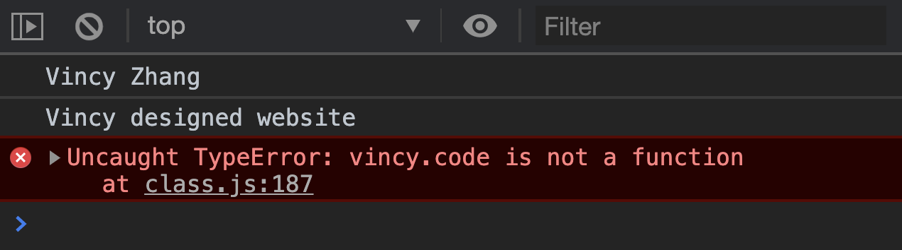
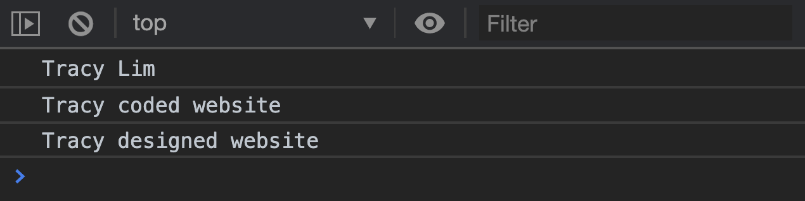
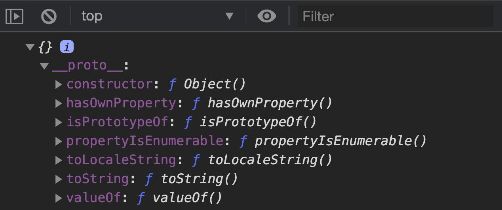
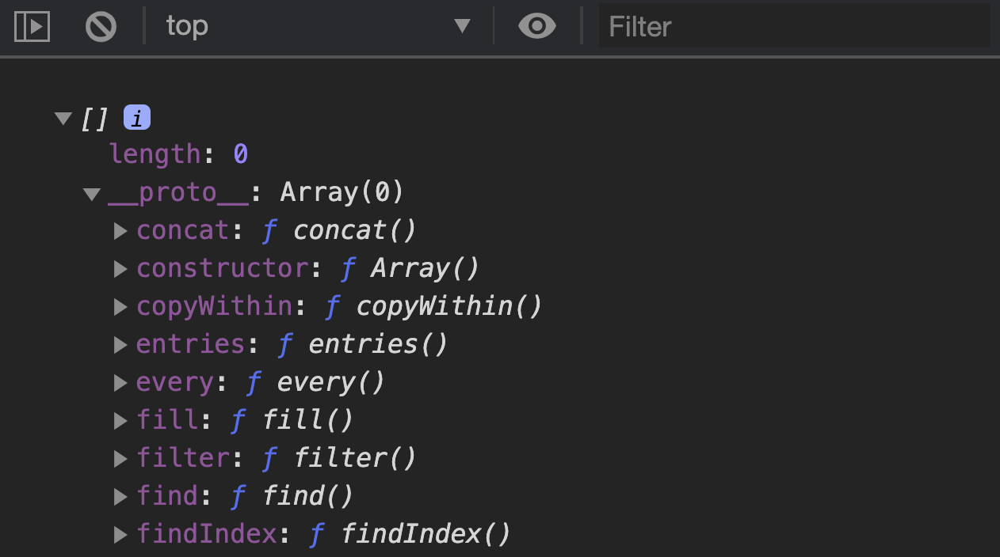
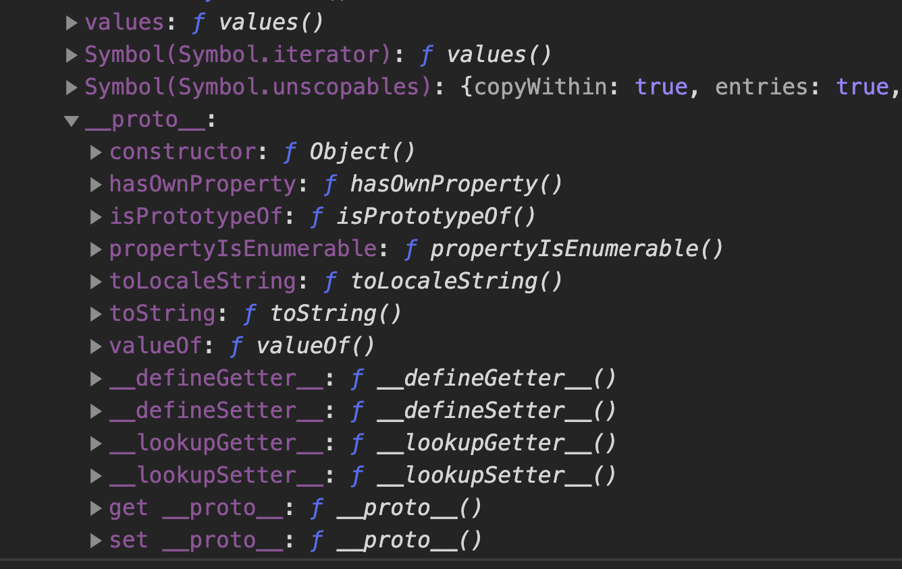

We can repeat the same process to create a designer. We will extend Human to create Designer.
class Designer extends Human {}
Designers can sayName and design, but they cannot code. We can mix these skills in with Object.assign.
Object.assign(Designer, canDesign, canSayName)
A Designer instance can now design and sayName. But it cannot code.
const vincy = new Designer('Vincy', 'Zhang')
vincy.sayName() // Vincy Zhang
vincy.design('website') // Vincy designed website
vincy.code('website') // Error

We can (once again) repeat the same steps to create DesignerWhoCodes.
class DesignerWhoCodes extends Human {}
Object.assign(DesignerWhoCodes, canCode, canDesign, canSayName)
A DesignerWhoCodes instance can sayName, code, and design.
const tracy = new DesignerWhoCodes('Tracy', 'Lim')
tracy.sayName() // Tracy Lim
tracy.code('website') // Tracy coded website
tracy.design('website') // Tracy designed website

Mixins uses Copy-pasting
When we combine objects with Object.assign, we copy properties from the later object into the earlier object. Therefore, Mixins uses Copy-pasting or Concatenative Inheritance.
Mixins and Composition
Composition means to combine things together. In this case, we combine skills (each skill is an object) into the subclasses prototype (another object).
Since we combine objects, we can say Mixins uses Object Composition.
There is another form of composition in JavaScript known as Function Composition, where we combine functions together to make a new function.
// Function Composition
const finalFunction = compose(function1, function2)
Don’t mix up Object Composition and Function Composition! (We won’t cover Function Composition much since we’re not touching Functional Programming in this course).
Favour Composition over Inheritance
When people say favour composition over inheritance, they mean the following terms:
Composition means Object Composition
Inheritance means Subclassing
They actually mean favour Object Composition over Subclassing.
Why?
When you design software, it’s impossible to know all future requirements in advance. Things will change. You’ll have to make adjustments. When you compose objects, you can create derivative objects without limiting yourself to a fixed structure.
Example:
Let’s say we have a new requirement now. We need a Robot who can design and code. But Robot cannot sayName.
How would you create Robot?
It’s super hard to create Robot if you used subclasses. But if you composed skills into the derivative object, you can always create a new Robot. For example, we can extend Human to create Robot, then give it canCode and canDesign.
class Robot extends Human {}
Object.assign(Robot.prototype, canCode, canDesign)
This works… but it’s weird for Robot to be a subclass of Human… right? With this, we see another downside with subclassing: It can be really hard to name abstractions.
Skipping Subclassing entirely
We can skip the entire extends Human thing and create Robot as a new Class.
When we do this, we can become even more flexible. For example, let’s say our Robot only has a firstName. It doesn’t have lastName.
Is Subclassing and Prototypal Delegation useless then?
Nope! Prototypal Delegation is a design pattern. It’s up to you whether you want to use Composition (and hence use Copy-paste) or use Prototypal Delegation.
When to favour Inheritance over Composition
You want to favour Inheritance over Composition when you know the derivative object completely inherits all properties of the parent object.
There are lots of great examples of this in the wild.
For example, Array derives from Object. If you look at an Object’s prototype, you see methods like hasOwnProperty, isPrototypeOf, toString, valueOf, and others.

If you open up an Array’s prototype, you’ll see methods you’re familiar with, like find and slice.

If you open an Array prototype’s prototype, you’ll see the same properties Object’s prototype.

This is why we say Array is an Object. (In fact, everything are objects in JavaScript, including primitives like strings. Try writing new String and explore!).